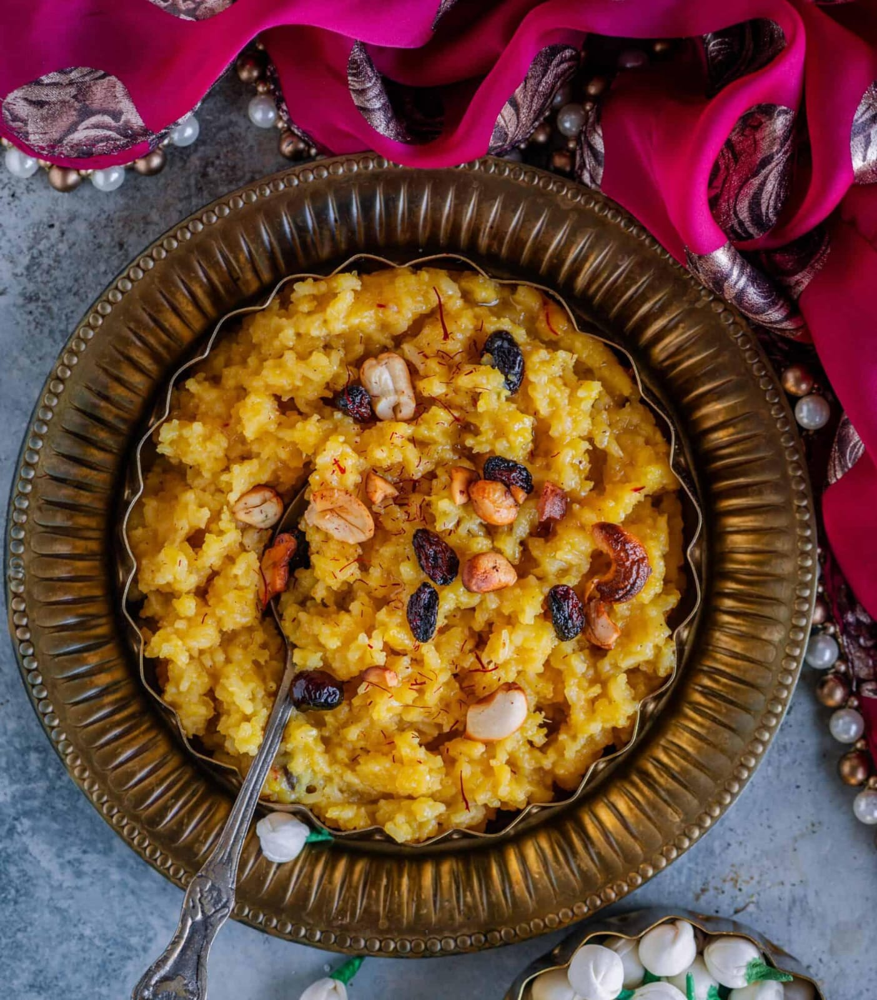

Ven Pongal
⭐⭐⭐⭐⭐ 4.8 Rating | ⏱ 35 Minutes | 🍽 4 Servings
Category
Breakfast
Difficulty
Easy
Calories
310 kcal
Cooking Style
South Indian
📋 Ingredients
- 1 Cup Raw Rice
- ½ Cup Moong Dal
- 4 Cups Water
- 2 tbsp Ghee
- 1 tsp Black Pepper
- 1 tsp Cumin Seeds
- 10 Cashew Nuts
- 1 tsp Grated Ginger
- 8 Curry Leaves
- A Pinch of Asafoetida (Hing)
- Salt to Taste
🍳 Required Utensils
- Pressure Cooker
- Frying Pan
- Spatula
- Measuring Cups
- Serving Bowl
📖 Introduction
Ven Pongal is a traditional South Indian breakfast made with rice and moong dal. It is soft, mildly spiced, rich in ghee, and commonly served with coconut chutney and sambar.
🔬 Principle
Rice and moong dal are pressure-cooked until soft. A tempering of ghee, cumin, black pepper, ginger, curry leaves, and cashews is added to enhance the flavor and aroma.
👨🍳 Procedure
- Dry roast the moong dal for 2–3 minutes.
- Wash the rice and roasted dal.
- Add rice, dal, water, and salt to a pressure cooker.
- Pressure cook for 4–5 whistles.
- Mash lightly after cooking.
- Heat ghee in a pan.
- Add cumin seeds, black pepper, ginger, curry leaves, and hing.
- Fry until aromatic.
- Add cashew nuts and roast until golden brown.
- Pour the tempering over the cooked Pongal.
- Mix well.
- Serve hot with coconut chutney and sambar.
⚠ Precautions
- Do not burn the ghee.
- Cook rice and dal until very soft.
- Use fresh ginger for better flavor.
- Add enough water for a creamy texture.
- Serve immediately while hot.
💡 Chef Tips
- Add extra ghee for authentic taste.
- Roast the moong dal before cooking.
- Use freshly crushed black pepper.
- Serve with hotel-style sambar.
- Garnish with roasted cashews.
🥗 Nutrition Facts
| Nutrient | Amount |
|---|---|
| Calories | 310 kcal |
| Protein | 10 g |
| Carbohydrates | 42 g |
| Fat | 11 g |
| Fiber | 4 g |
🍽 Serving Suggestions
- Serve with Coconut Chutney.
- Enjoy with Sambar.
- Pair with Tomato Chutney.
- Serve with Medu Vada.
- Enjoy with Filter Coffee.
🌿 Health Benefits
- Moong dal is rich in protein.
- Easy to digest.
- Provides long-lasting energy.
- Contains dietary fiber.
- Good breakfast for all age groups.
✅ Result
The prepared Ven Pongal should be soft, creamy, mildly spiced, and aromatic with ghee, black pepper, cumin, and roasted cashews. It is best served hot with coconut chutney and sambar.
🎥 Watch Recipe Video
Learn the complete recipe by watching the step-by-step video.
▶ Watch on YouTube